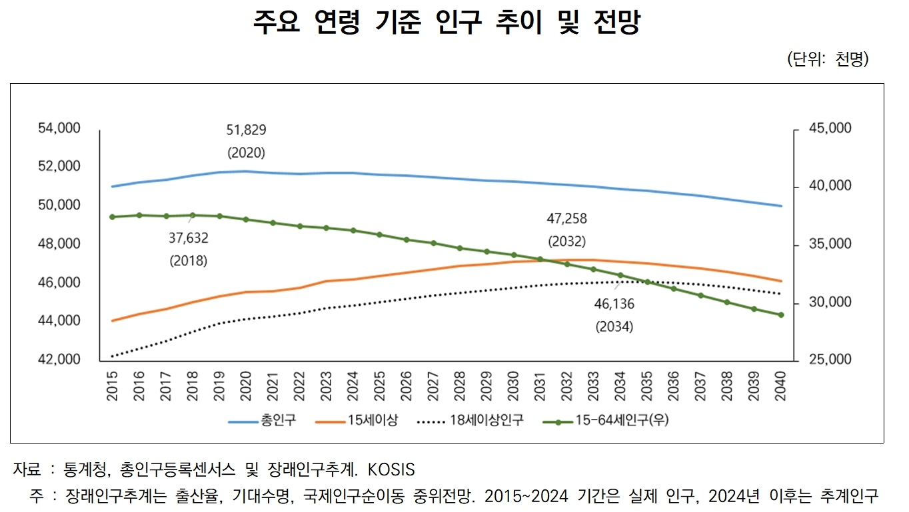
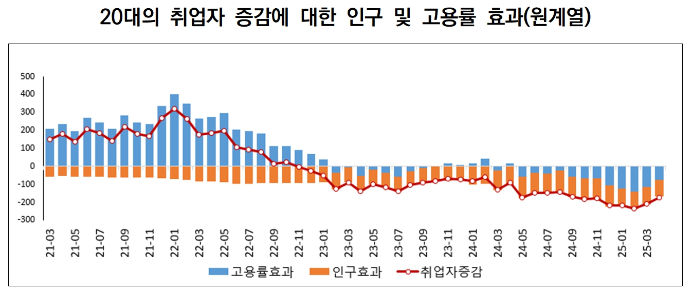
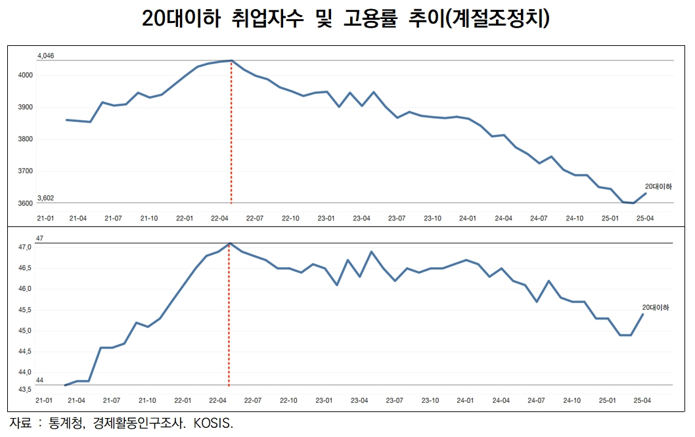

박영삼의 통계로 보는 노동
총인구 감소 5년 전 시작에도 체감도 낮아 … 생산인구 감소 속 청년고용률 올리기 과제
이번 대통령선거에서 투표권을 가진 유권자수와 투표자수는 대한민국 정부 수립 이후 역대 최고치를 기록했다. 총 유권자수가 4천439만1천명이었고 투표자수는 3천523만6천명이었다. 최종 투표율은 79.4%였다.
언론이 이 같은 사실을 보도하자, 다수 국민들은 잠시 우리나라 인구가 저출산고령화에도 아직은 성장세를 지속하고 있는 것으로 생각했을지 모른다. 하지만 그렇지 않다.
18세 이상 인구는 다양한 연령대 중에서 줄어드는 속도가 가장 느린 축에 속한다. 인구추계 상으로 2034년까지는 숫자가 줄어들지 않는다. 18세 미만 인구가 매년 약 40만명가량 신규로 진입할 예정인 반면, 18세 이상 사망인구는 그보다 훨씬 적기 때문이다.
경제활동인구조사의 분모에 포함되는 15세 이상 인구도 2032년까지는 절대 규모 자체가 줄어들지 않는다. 올해 기준으로 15만명 정도 늘어났는데 2032년에 가서야 증가폭이 ’0’이 되고 그 후로는 돌이킬 수 없는 축소가 예정돼 있다. 이것 때문에 취업자수가 아직까지는 전년대비 플러스를 유지하고 있다.

하지만 외국인을 포함한 총인구는 5년 전인 2020년부터 이미 감소가 시작됐다. 외국인이 2022~2023년 각각 175만명·193만명으로 다시 늘어났는데도 총인구는 2020년의 5천183만명 수준을 회복하지 못하고 있다. 지난해 총인구는 5천175만명 규모로 줄어들었다. 장래인구추계에 따르면 총인구는 2035년까지 매년 10만명씩 줄어들 전망이다.
가장 빠르게 줄어들고 있는 것은 15~64세 생산가능인구다. 2018년 3천763만명으로 피크를 기록한 뒤 매년 30만명씩 줄어들고 있다. 65세 이상 고령자의 연도별 출생인구와 15세 미만 유소년들의 출생인구 규모가 30만명 이상 차이 나기 때문이다. 올해 15~64세 인구는 3천591만명으로 2018년 대비 172만명이 줄어든 상태다.
정리하자면 생산가능인구(15~64세)는 2018년부터 줄어들고 있고, 총인구는 2020년부터 감소하기 시작했다. 15세 이상 인구는 2032년부터 줄어들게 돼 있다. 다만 유권자 수는 10년 후인 2034년부터 감소하는 것으로 예정돼 있다. 이재명 대통령의 임기로 국한한다면 2025~2030년 총인구는 38만명 감소하는데, 15~64세 인구는 4배 이상 규모인 175만명 감소가 예정돼 있다. 15세 이상 인구는 72만명 늘어날 예정이며 18세 이상 유권자는 76만명 늘어날 예정이다. 이재명 정부가 마주해야 할 중대한 과제들 중에 내란극복과 경제 재건뿐만 아니라 본격화할 인구변화 압박도 만만치 않다.
그런데 이번 선거에서 이재명 대통령을 가장 덜 지지했던 20대 청년층은 윤석열 정부 시대의 가장 큰 피해자였다. 모든 연령대에서 유일하게 인구 대비 취업자수, 즉 고용률이 하락하고 있는 연령대가 바로 20대 이하다.
통계청이 가장 최근에 발표한 ’2025년 4월 고용동향’에 따르면 다른 연령대의 고용률은 모두 전년대비 상승했는데 20대 이하만 46.2%에서 45.3%로 0.9%포인트 하락했다. 지난해 5월 이후 원계열 기준으로는 11개월째 전년대비 고용률 하락이 계속되고 있다.
취업자 감소에 영향을 미치는 요인을 인구 효과와 고용률 효과로 분해할 수 있다. 전년과 고용률은 동일하다고 가정할 때 인구증감에 따른 영향을 인구효과(전년동기 고용률×인구증감), 인구변화가 없다고 가정하고 고용률 증감으로 인한 영향을 고용률 효과(당해년도 인구×고용률증감치, 노동수요 변화 및 정책 효과)로 나눠 계산했다. 아래 <그림>을 보면 2022년 12월 이후 20대의 취업자 감소가 인구효과에 의한 요인도 작용하고는 있으나, 지난해 2월 이후에는 고용률 감소에 의한 영향이 점점 더 커지고 있음을 알 수 있다.

통계청의 계절조정치 고용률을 보면 20대의 고용률 하락세가 얼마나 심각한지 훨씬 더 분명히 알 수 있다. 20대 이하 연령대의 계절조정치 고용률은 2022년 5월에 최고치를 기록한 이후 3년 동안 줄곧 하락세를 면치 못하고 있다. 20대의 취업자 감소가 인구감소 때문이 아니라 고용률 자체의 하락 때문이라는 것을 확실히 보여준다. 더구나 그 흐름이 시작된 것이 2022년 5월 윤석열 정부 출범 이후부터다.

우리 사회의 인구구조 변화는 이미 상당한 정도로 진행된 상태이며 앞으로 5년간의 변화 압박도 만만치 않을 전망이다. 여기에 윤석열 정부 시절 망쳐 놓은 청년층의 고용률 하락 흐름을 반전시켜야 할 만만치 않은 숙제가 이재명 정부의 입구에 놓여 있다.
고려대 노동문제연구소 노동데이터센터장 (youngsampk@gmail.com)